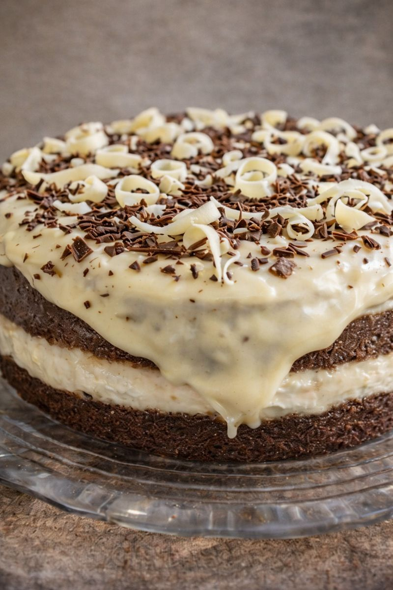
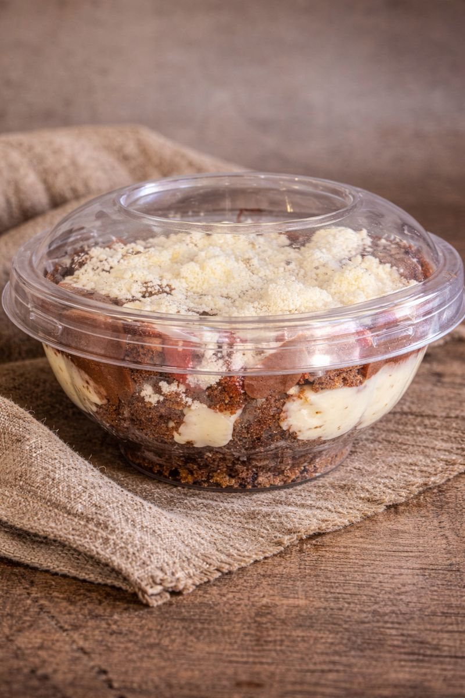

Sobre a Ninha
A Caseirinhos da Ninha nasceu do amor pela cozinha e pelas receitas de família. Cada bolo e doce é preparado com ingredientes selecionados e muito carinho, para adoçar momentos especiais.
O que vendemos
- Bolo de maçã integral
- Bolo de aniversário
- Bolo no pote
- Doces tradicionais
- Doces camuflados
Cardápio
Bolos caseiros
Chocolate, cenoura, laranja, milho, coco
A partir de R$ 30,00Bolos de aniversário
Recheios variados e decoração personalizada
Valores sob consultaBolo no pote
Sabores tradicionais e especiais
R$ 12,00Doces tradicionais
Brigadeiro, beijinho, cajuzinho
R$ 1,50 (unid.)Doces camuflados
Sabores variados
R$ 8,00 (unid.)




Fazer pedido pelo WhatsApp
O que nossos clientes dizem
⭐⭐⭐⭐⭐
Bolos deliciosos e atendimento maravilhoso.
⭐⭐⭐⭐⭐
Doces incríveis, sempre caprichados.